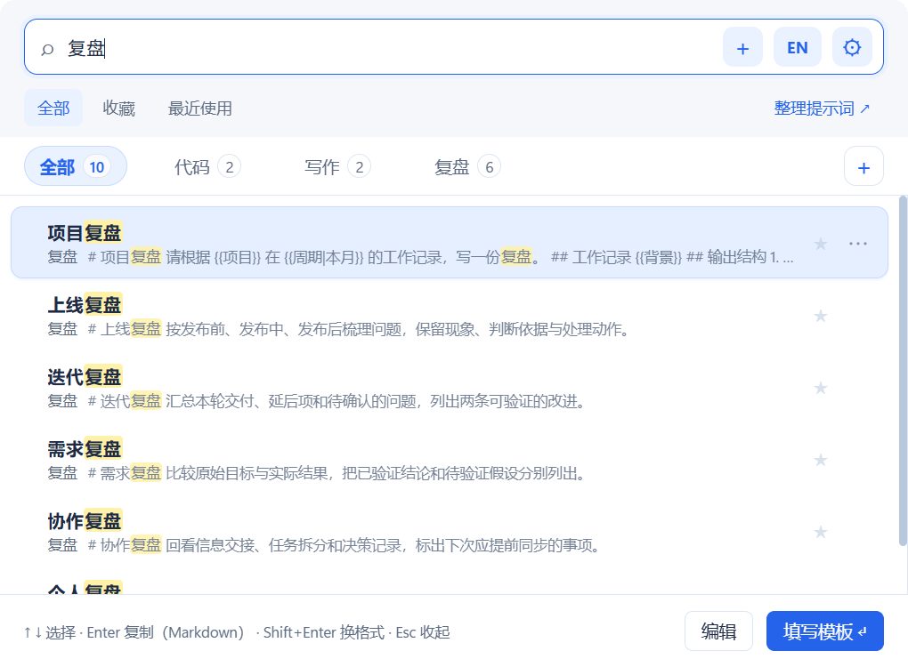

提示词，随手取用。
一款桌面提示词库。按快捷键搜索本地 Markdown 文件，找到常用提示词就能直接使用。
下载 Prompt Pocket
复盘/01-项目复盘.md查看完整原图 ↗提示词就是一个文件。
文件存在本机，按分类目录保存，也可以用文本编辑器直接改。模板变量每次使用时填写。
编辑或删除后能找回历史版本，也可按需同步到 GitHub 或坚果云 WebDAV。
01-项目复盘.md# 项目复盘
请根据 {{项目}} 在 {{周期|本月}} 的工作记录，写一份复盘。
## 工作记录
{{背景}}v2.4.0
下载安装
Windows 可自动粘贴回原窗口。macOS 和 Linux 复制后手动粘贴。